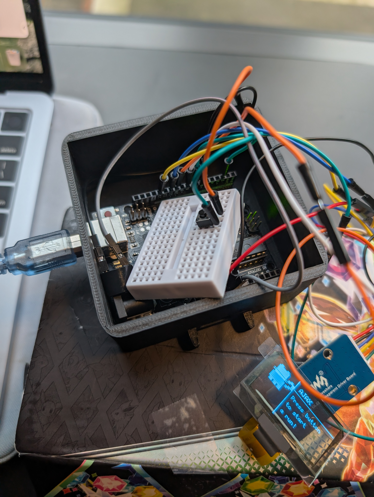
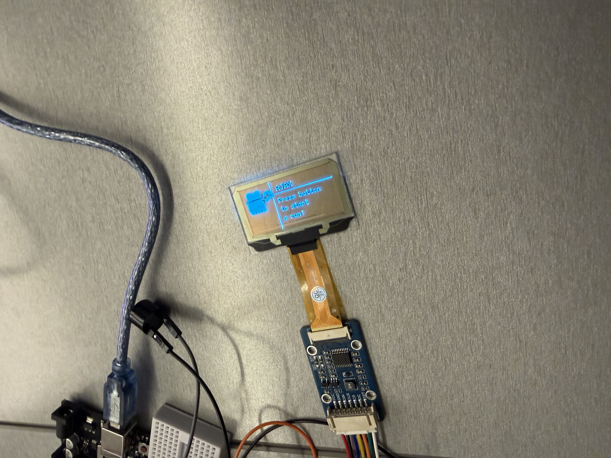
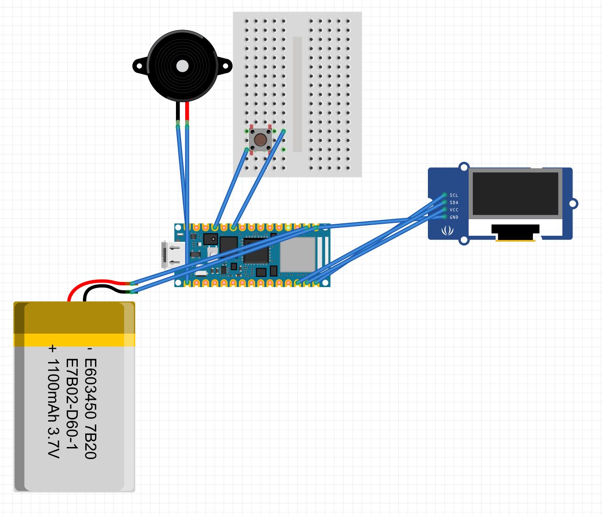
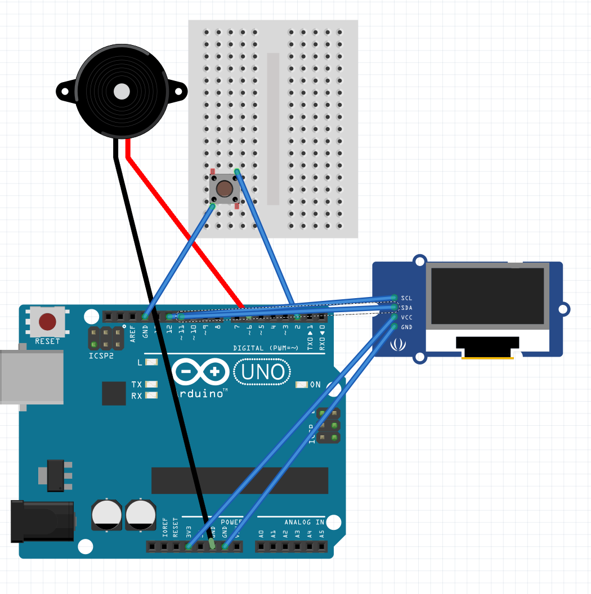
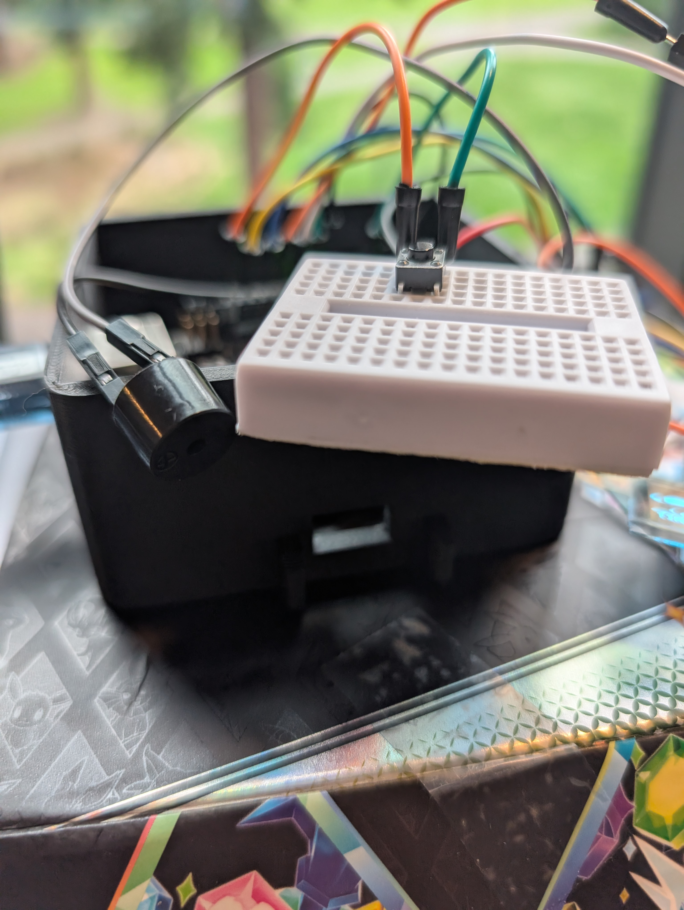

Physical Prototype — HCDE 539
RunPal: A wrist-worn running companion
RunPal is a wearable device built around an Arduino Nano 33 BLE Sense and a 1.51" transparent OLED display. A pixel-art cat character animates in real time to reflect your running state — sitting idle while waiting, counting down, sprinting alongside you, and showing your final run time on a summary screen.
Runs were designed to be started and stopped entirely by voice using an on-device TFLite machine learning model trained with Edge Impulse, recognizing the keywords "Hey Ajax" and "Stop run" — no phone or internet required. A passive buzzer provides audio feedback at the start and end of each run.
Design Concept
Motivation through a digital companion
Runners consistently identify motivation as one of the biggest challenges in maintaining training consistency. Prior research from the RunAR project also surfaced a strong preference for hands-free interaction — runners don't want to use their hands to control devices mid-run.
RunPal addresses both of these problems. A pixel-art pet character provides a gamification layer — it runs when you run, sitting still if you stop — creating a low-stakes sense of accountability. Voice commands keep the interaction entirely hands-free.
The system was designed to be housed in a custom 3D-printed watch case with a standard 20mm watch strap, making it wearable during an actual run.

Hardware
Components and circuit design
The hardware is built around the Arduino Nano 33 BLE Sense — chosen for its onboard PDM microphone, nRF52840 processor, and TinyML capability. This allowed the voice recognition model to run entirely on-device without a wireless connection.
- Arduino Nano 33 BLE Sense — Main controller with onboard microphone and nRF52840 processor
- 1.51" Transparent OLED (SSD1309) — Connected via SPI for the display and cat animation
- Passive Buzzer — Audio feedback on run start and stop (via D6)
- Push Button — Manual fallback for voice commands (via D2, INPUT_PULLUP)
- 3.7V 600mAh LiPo Battery — Portable power via 3.3V pin
The display, microphone, buzzer, and button were wired to specific pins to avoid conflicts between SPI communication, tone output, and the PDM audio sampling loop.


Left: Nano 33 BLE Sense circuit (full voice + TinyML version) | Right: Uno fallback circuit (button only)


Software Architecture
Finite state machine with TinyML voice recognition
The firmware is structured around a five-state finite state machine. Each state controls what is rendered on the OLED, which inputs are accepted, and what audio plays.
- IDLE The cat sits and blinks. The system listens continuously for voice input via the onboard PDM microphone, running inference through a TFLite model every loop cycle.
- COUNTDOWN Triggered when "Hey Ajax" is detected above the confidence threshold. Runs a 5-second countdown on screen. Inference is paused during this state to keep the animation smooth.
- RUNNING Elapsed time is calculated each loop and shown at the bottom of the display. The cat animation cycles through 4 frames with bounce physics, speed lines, and a tail wag. The microphone continues listening for "Stop run".
- STOPPING Triggered by voice or button. The timer freezes at the exact millisecond. The buzzer plays two descending beeps. A brief pause screen plays before advancing.
- SUMMARY Displays the final frozen run time for 10 seconds, then automatically resets to IDLE.
Display rendering uses the U8g2 library with a pixel-art drawing approach — all cat graphics are built from filled rectangles on a 2×2 pixel grid for a chunky 8-bit aesthetic. Button input uses software debouncing to prevent false triggers.

Development Process
AI-assisted hardware and firmware development
This project was a deliberate exercise in using AI throughout a physical prototyping workflow — from firmware architecture to 3D-printed enclosure design.
I started by getting the OLED display working, using Claude to identify the right libraries and iterating through prompts until I had a pixel-art cat rendering on screen. At that point I realized the original screen didn't suit a glasses form factor and pivoted to a smartwatch concept, which better fit both the display size and the hands-free use case.
I then used Claude to guide the Edge Impulse model training workflow — understanding how to structure keyword recordings, set confidence thresholds, and integrate the exported TFLite model into the firmware loop. Claude also wrote and revised the full state machine code, incorporating the display animations, buzzer feedback, and button debouncing logic.
For the enclosure, I used Claude to generate an OpenSCAD file sized to fit the exact component dimensions. I imported the resulting model into Rhino, adjusted the layout, and exported it to Prusa Slicer for 3D printing.
The Pivot
The Nano was fried during final assembly
During the final assembly step — fitting the components into the 3D-printed case and connecting the battery — the Arduino Nano 33 BLE Sense was destroyed. The most likely cause was a voltage issue introduced when adding a power adapter for additional ground inputs; the buzzer began emitting a high-pitched tone and the board stopped responding.
I pivoted to an Arduino Uno, which I used Claude to adapt the firmware for. The Uno version runs the full OLED animation and state machine but replaces voice commands with button-only input, and the larger form factor no longer fits the 3D-printed case.
The Uno version still demonstrates the core concept — the pixel-art cat animating in response to a run start and stop — but without the hands-free interaction that made the original design distinctive.
Reflection
What I would do differently
The hardware failure came down to component compatibility — specifically, not fully understanding the power requirements of the battery relative to the adapter and the Nano's voltage tolerance. Next time I would verify every component in the power chain before final assembly and bench test battery connections independently before integrating them with the full circuit.
Time management also played a role. Most of the assembly steps were compressed into a short window near the deadline, which reduced the margin for debugging. A phased integration plan — testing the battery with a minimal circuit first — would have caught the issue earlier.
The AI-assisted development workflow, however, was a genuine strength. Using Claude throughout — from library selection to state machine architecture to enclosure design — compressed what would have been weeks of independent research into a much tighter iteration cycle. That part of the process I would repeat exactly.
← Back to home